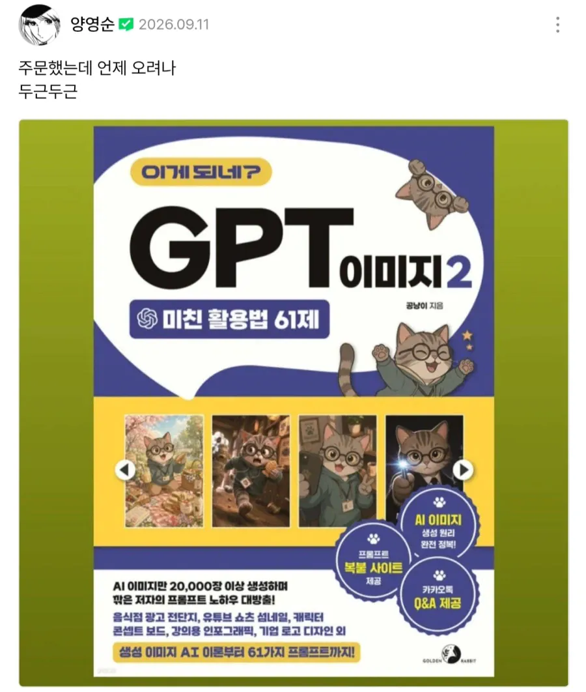
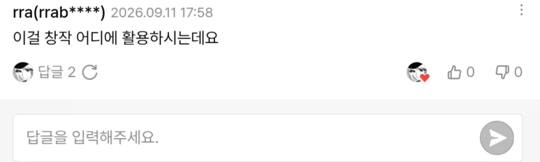

아직도 정신 못차린듯


아직도 정신 못차린듯
꺼져
고작 2만장...?
아카라이브 그림 채널에는 하루에 4천장씩 뽑아대고
서버 비용에 대한 이해도 없이 한달 7천장 할당량이 부족하다고 매일 업체를 욕하는 인간딸쟁이들이 가득한데
그것도 부족해서 계정 두세 개 돌리고
덴마 식스틴때 감탄하면서 봤는데 유기를 할줄이야
덴마는 옴니버스 만화래
두개의 퀑기술이합쳐진 콤비네이션이다
니 만화는 이제 안봐
집 쓰레기 정리 하면서 덴마 한정판 피규어 버림
살면서 피규어 3개샀는데 덴마 롯, 공자. 와우 사울팽 이렇게 였다
덴마 시발년아!
우와... 저런 한심한 책을 돈주고 사는 사람들이 진짜 있구나
쓰레기를 재활용 하는 는력!
이딴걸 돈주고 사서 배우는 시점에서 이미 나가리야
내가 덴마 이후로 웹툰을 안봐 너무 상처받아서
그래도 덴큐 나와서 다행이었지...
좆같은 그림체 참고 내가 왜 덴마를 봐가지고
친구들 한테 백날 추천해도 재미없다하는대 나만 재미있었음 ㅅㅂ
난 댄마 단행본까지 샀던 사람임 ㅠㅠ
근데 진짜 너무 충격아었음.
근데 덴큐는 볼만해?
나는 개인적으로 좋게 결말 잘냈다고 생각하는대 안봤으면 꼭 봐
OK 도전 못하고 있었는데 한번 봐야겠다.
나름 잘 마무리지었지만
급하기 떡밥 회수만 하는 만화라는 근본적인 문제가 있음..
아물론 덴큐 첨에보면 그림체 적응안될꺼임
GPT야 엔딩 좀 만들어줘
만화랑 게임 사업 쪽에서 ai 이미지에 대해 유저들 반발 장난 아니라고 하더라. 한국 말고 해외유저들도.
타츠키만도 못한놈
끝났네
AI라도 써서 결말 내면 좋은거 아닌가 싶더라도
양영순은 그림그릴 체력이 딸려서 결말을 못내는게 아님.
그냥 서사를 마무리하는걸 무서워하는 겁쟁이야.
오옵오오옵
꼴랑 2만장가지고 어딜 깝치냐
작가가 AI 딸깍을 배운다 - 작가로서의 자존심 같은건 본인이 알아서 할 문제니까 그럴 수는 있다고 생각함
AI 딸깍 배우려고 종이책 사고 언제오나 기다림 - ?????
이상한데서 시대상에 안맞는 아저씨네
차기작 기회? 그 달마머시깽이도 파토난거?
수정 가능한 레이어로 작업시키고 수정하면 안되나
원래 일본처럼 손으로 원화 따던 시대에서 우리나라 웹툰처럼 디지털 작업으로 바뀌는기 좀 늦지 않았냐
그냥 도태되는 정신같은데 ㅋ
한달이면 크게 변하는 동네인데 ai를 배우고싶으면 당장 20x 프로 결제부터 하고 부딪히면서 배워야지 딱봐도 예시이미지부터 녹슬어보이는 책으로 배워봣자 ㅋㅋㅋ
그냥 대놓고 어그로인데
정말 근황 알고싶지 않은 만화작가 1위
몰입감 있는 스토리와 세계관. 작화 실력을 가졌지만 완결을 내지 못하는 저주에 걸린 작가.
나도 100이 뜨면 바로 보러가던 덴경대였지만 덴경대를 적으로 돌린 사람..
달마건은 몇화 갈까?
다시는 절대 양가놈꺼 안봄 ㅋㅋ
덴마때 진짜 너무크게 배신당함ㅋㅋㅋ
그래 차라리 ai써서라도 완결내라
나 ai써요 대놓고 말하고 쓰는게 낫다고 본다
어쩌겠어 본인이 마무리 지을 능력이 없다는데 저런거라도 써야지
나도 찬성 새로운 기술 배워야지
AI로 그림그리면 죄다 배껴대도 처벌안받는거 아닌가
그러네 트레이싱이라고 하기 어렵네
이미지 말고 스토리에 쓰라고 씨발!
솔직히 양영순 그림체는 개성이랑 형태가 제대로 자리 잡아서 ai 학습 시켜두면 나쁘진 않을듯?
저딴걸 돈주고 사는구나ㅋㅋ
고작 2만장ㅋㅋㅋ
예...미....쓔ㅣ풀....
그림에 AI를 쓰던말던 그딴게 문제가 아님 이새끼는
쳐 그리던 만화 유기때리는 버릇이 문제지. 시-발
양영순껀 이제 안봄
덴마생각하면 치가떨린다
ai 배우려고 종이책을 산 거야?
달마건은 또 유기함?
웹툰 ㅈㄴ ai로 그림 쭉쭉뽑아서 빨리완결보고싶은게 한둘이아니다
연재 할 동안엔 쓰지말고 완결편 만들때만 써라
덴마 진짜 후반부 부터 ai대체해서 다시 엔딩내리면 업적작ㅇㅈ
글 양영순 그림 GPT 보다 글, 그림 GPT 이게 더 낫지않음?